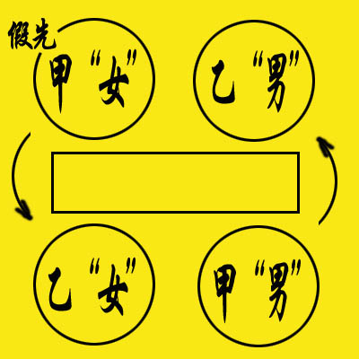
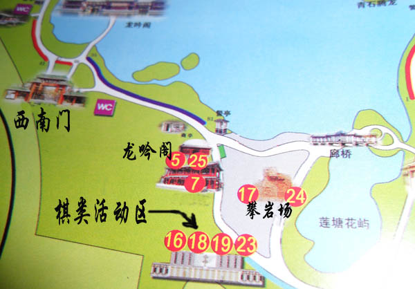

双人赛公告
#1 双人赛公告作者：茗弈宽容 发表时间：2010-2-8 21:38:31
一、规则说明：比赛采用简化那氏五子棋竞赛规则：
1、黑指定黑第一手棋的横坐标
2、白指定黑第一手棋的纵坐标
3、黑指定任意开局（不限26种，第2手白，第3手黑任意）
4、白可选择交换棋子颜色
5、黑五手两打
6、黑棋有禁手（后面按中国五子棋竞赛规则）
*第一手不限天元，位置双方确定，黑开局前三手不限26种开局任意组合，后面三手交换、五手两打、黑有禁手同中国五子棋竞赛规则。优点：比现行规则开局自由，变化增大，定式占有比率大大缩小，由于第一手位置由双方决定，赛前准备难度加大。基本条款上以中国五子棋竞赛规则相同。
二、比赛流程：
1、按编排入座：假先组“女”棋手先行，假后组“女”棋手先行。

2、如果比赛采用非积分编排，由双方“男”棋手抓子猜先，棋子和数为奇数换，偶数不换。
3、假后靠近棋钟棋手拍表。
4、按编排（猜先）假先“女”取一枚黑棋，在靠近自己棋盘底数上任选一点落子，后拍表。
5、假后“女”将盘上黑子沿纵向方向移动，到自己选择的点，并取一枚白子交与假先“男”，后拍表。
6、假先“男”在棋盘上选点落2、3子，后拍表。
7、假后“男”选择交换与否，交换换子拍表，不交换落子拍表。
8、交换后黑方“女”，在盘面上翻放两个黑子，后拍表。
9、白方“女”，拿下一子，并将留下的翻正，行白6，后拍表。
10、以下按次序行棋。
三、比赛赛制：
为了让大家更好的享受棋乐，赛制将不采用双败淘汰，根据人数积分编排，或者分组循环再淘汰。
四、比赛时间：
2月17、18日（初四、初五），初四早8：30在龙潭湖公园西南门领取参赛证，联系人：于宁（13718364365）
五、比赛地点：
龙潭湖庙会棋类活动区，龙潭湖公园龙吟阁西

龙潭湖庙会从除夕到初七都有免费班车。起点是从地铁5号线天坛东门C出口，终点是龙潭湖西北门。班车时间早上9点到下午4点。 （转自中国连珠）